ERP Montaza
Documentation Utilisateur
Client Léger
Table des matières
Table des matières 1
Introduction 3
Navigation 4
Barre de navigation 4
Raccourcis 5
Modification des raccourcis 5
Ajouter un contact 6
Notifications 7
Page Lu 7
Utilisateurs 8
Structure des comptes utilisateurs 8
Modifier son profil utilisateur 8
Mot de passe oublié 9
Sociétés 10
Détails de société 11
Ajouter une société 12
Ajouter un établissement 13
Matières 14
Importation CSV matière 15
Nouvelle matière 16
Modifier la matière 17
Matière modifiable 17
Matière verrouillée 17
Détails de la matière 18
Historique prix matière fournisseur 19
Unités 19
Standards 19
Stocks 20
le stock simple (par quantité globale) 20
Le stock avec valeur unitaire (ou par unité de conditionnement) 20
Ajouter matière dans le stock 20
Retirer matière dans le stock 21
Mouvements de stock 22
Demande de prix 23
Créer une demande de prix 23
Récapitulatif et validation Demande de prix 25
PDF et envoie de mail Demande de prix 26
Retours de demande de prix 27
Demande de prix terminé 28
Commandes 29
Créer une Commande 29
Récapitulatif et validation Commande 31
PDF et envoie de mail commande 32
Retours & livraison de commande 33
Commande terminé 34
Commande vérifiée et enregistrement en stock 35
Affaires 36
Nouvelle affaire 36
Consulter une affaire 36
Editer une affaire 37
Fonctionnalités communes 37
Statut d’enregistrement 37
Statuts 38
Autres Pages 39
Page d’accueil 39
Page DDP/CDE 39
Tableau de bord 40
Administration 41
Utilisateurs 42
Créer un utilisateur 42
Modifier un utilisateur 43
Informations entreprise 44
Entités 44
Historique 45
Modèle de mail 46
Notes de commande 47
Modifier la note de commande 47
Permissions & Postes 48
Permissions 48
Postes 49
Personnalisation 52
Apparence 52
Introduction
Bienvenue dans la documentation utilisateur de Montaza. Ce guide a été conçu pour vous accompagner dans la prise en main et l'utilisation optimale de l'application.
À propos de Montaza
Montaza, l’outil conçu pour simplifier et optimiser la gestion des demandes de prix, des commandes des matières et du stock au sein de l’entreprise Atlantis Montaza.
Grâce à son interface, Montaza permet aux utilisateurs de :
- Créer et suivre des demandes de prix auprès des fournisseurs.
- Gérer les commandes de matières et assurer leur bon suivi.
- Superviser le stock en temps réel pour éviter les ruptures et optimiser les approvisionnements.
Objectifs
Cette documentation a pour but de :
- Présenter les fonctionnalités principales de l’ERP Montaza.
- Fournir des instructions détaillées sur l’utilisation des différentes fonctionnalités.
- Répondre aux questions courantes et proposer des solutions aux problèmes éventuels.
Public cible
Ce document s’adresse aux utilisateurs finaux de l’ERP Montaza à savoir l’ensemble des salariés de l’organisation, qu’ils soient nouveaux ou expérimentés.
Nous vous invitons à suivre attentivement ce guide afin de profiter pleinement de la solution et d’exploiter tout son potentiel.
La présentation de la solution s’effectuera sur le mode sombre de l’application mais elle possède aussi un mode claire (voir Personnalisation)
Navigation
Barre de navigation
- (logo) Bouton accueil :
Il permet de retourner à la page d’accueil de l’application.
- Bouton retour : Permet à l'utilisateur de retourner à la page précédente. L’utilisateur peut cliquer à plusieurs reprises pour remonter dans l’historique de navigation.
- Boutons de navigation: Ils permettent de naviguer entre les menus principaux de l’application (lorsque le bouton est en surbrillance et souligné en bleu cela signifie que l’utilisateur se trouve dans les pages correspondantes).
- Bouton “Raccourcis” : Il permet d’afficher le menu déroulant des raccourcis choisi par l’utilisateur.
- Bouton “Notifications” : Permet d’ouvrir la fenêtre contextuelle des notifications.
- Menu déroulant “Actions” : Il permet à l'utilisateur d’accéder à :
- Son profil.
- L’administration.
- “Se déconnecter”.
Raccourcis
Les raccourcis sont une fonction qui permet à l'utilisateur de sélectionner des pages ou des fonctions de l’application dans une liste définie pour y accéder directement.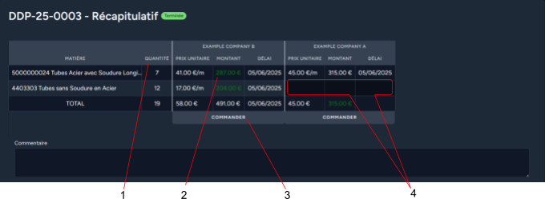
Pour afficher vos raccourcis, appuyez sur le bouton en haut à droite de
la barre de navigation.
Modification des raccourcis
Pour modifier vos raccourcis, affichez vos raccourcis et appuyez sur l'icône de modification (1).
Dans cette page, vous pouvez sélectionner et enregistrer les raccourcis que vous souhaitez avoir dans votre menu déroulant de raccourcis.
L’aperçu à droite permet de se rendre compte en direct de ce à quoi le menu déroulant ressemblera.
Les boutons en forme de lignes permettent de réorganiser l’ordre de vos raccourcis.
Ajouter un contact
Ce raccourci permet à l'utilisateur d’ajouter un contact d’une société rapidement dans n’importe quelle page sans interrompre les actions en cours.
Seuls les champs “Email” et “établissement” sont obligatoires.
Société : Sélectionnez la société à laquelle ajouter ce contact.
Etablissement : Sélectionnez l’établissement auquel ajouter le contact après avoir sélectionné la société.
Nom : Nom du contact.
Poste : Le poste ou le service de l’utilisateur.
Téléphone fixe : Téléphone fixe du contact.
Téléphone portable : Téléphone portable du contact.
Notifications
Les notifications se situent dans l’icône “cloche” disponible en haut à droite de la barre de navigation.
Elles sont émises par les différentes parties du logiciel principalement pour des rappels ou des erreurs.
- Catégorie de la notification : Les notifications sont catégorisées et cela permet de les retrouver plus facilement dans les onglets.
- Ouvrir dans un autre onglet : Permet d’afficher la notification dans un nouvel onglet. Attention : cette action marque la notification comme “Lu”.
- Transférer à un poste : Permet de transférer la notification à un autre poste.
- Marquer comme “Lu” : Cette action a pour effet de transférer la notification dans la liste “Lu”.
- Catégories de notification : Elle permet de filtrer les notifications par catégorie (ex: système, commandes, livraison…).
Page Lu
La page “lu” permet de retrouver l’historique des notifications qui n’apparaissent plus dans la liste principale.
- Bouton “Marquer comme non lu” : Il permet de réintroduire la notification dans le fil principal et sa catégorie.
Utilisateurs
Structure des comptes utilisateurs
Chaque utilisateur possède un compte personnel avec un identifiant email et un mot de passe.
Chaque utilisateur a un poste attribué, ce poste a des permissions restreintes ce qui permet de gérer les accès aux différentes fonctionnalités de l’application.
Modifier son profil utilisateur
1. Informations du profil
Dans cette section, l'utilisateur peut modifier ses données personnelles. Les champs disponibles sont :
- Nom : le nom de famille de l'utilisateur.
- Prénom : le prénom de l'utilisateur.
- Téléphone : le numéro de téléphone au
format international (ex. : +336...). - Email : l'adresse e-mail associée au compte.
Une fois les modifications apportées, cliquez sur le bouton "SAUVEGARDER" pour enregistrer les changements.
2. Mettre à jour le mot de passe
Cette section permet de changer le mot de passe actuel. L'utilisateur doit renseigner le mot de passe utilisé actuellement pour accéder au compte ainsi que le nouveau mot de passe souhaité et elle doit confirmer le mot de passe pour éviter les erreurs.
Remarques de sécurité :
Utiliser un mot de passe long et complexe pour une meilleure sécurité.
Seuls les caractères spéciaux = + - _ ! $ € % sont autorisés.
Cliquez sur le bouton "SAUVEGARDER" pour appliquer le nouveau mot de passe.
Mot de passe oublié
SI vous oubliez votre mot de passe, vous pouvez réinitialiser votre mot de passe :
Appuyez sur le bouton mot de passe oublié.
Renseignez l’adresse mail liée au compte et appuyez sur
“LIEN DE RÉINITIALISATION DU MOT DE PASSE”.
Vous allez recevoir un mail avec un lien pour réinitialiser votre mot de passe :
Appuyez sur le bouton “Réinitialisation du mot de passe”
pour accéder à la page de réinitialisation du mot de passe.
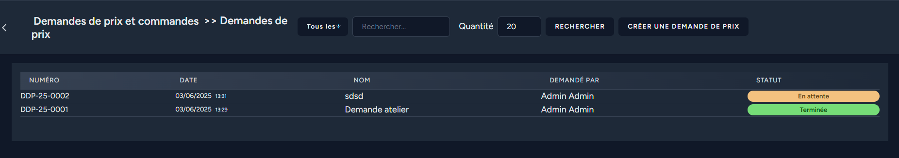
Sur cette page vous pouvez renseigner votre nouveau mot de passe et le confirmer.
Appuyer sur “RÉINITIALISATION DU MOT DE PASSE” et vous pouvez vous reconnecter avec votre nouveau mot de passe.
Sociétés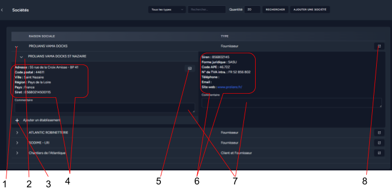
- Bouton société : Bouton déroulant qui contient les informations de la société.
- Bouton établissement : Onglet qui contient la liste de tous les établissements de la société.
- Informations de la société: Récapitulatif des informations stockées sur une société.
- Bouton détails : Permet d’aller voir en détail une société.
- Bouton établissement : Bouton déroulant qui contient les informations de l’établissement.
- Bouton “ajouter un établissement” : Permet d’ajouter un établissement à la société.
- Informations de l’établissement : Récapitulatif des informations stockées sur un établissement.
- Menu contacts : Permet de voir les contacts de l’établissement dans une fenêtre pop-up.
ⓘ Chaque information sur la page peut être cliqué pour être copier
- Sélecteur de type : Permet de choisir quel type de société s’affiche.
- Champ de recherche : Permet de filtrer les sociétés par leurs raisons sociales.
- champ quantité : Permet de choisir la quantité de société affichée par page.
- Bouton ajouter une société : Permet d'accéder à la page ajouter une société.
Détails de société
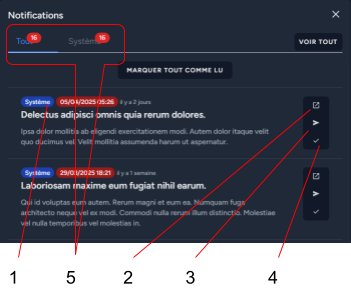
- Bouton modifier : Permet d’accéder à la page “modifier la société”.
- Champs de commentaires : Commentaire sauvegardé en direct.
- Sélecteur d’établissement : Permet de sélectionner quel établissement est affiché.
- Menu contacts : Permet de visualiser les contacts de l’établissement.
- Bouton Ajouter un établissement : Permet d’accéder à ajouter un établissement.
- Bouton modifier : Permet d’accéder à modifier l’établissement.
- Bouton ajouter un contact : Permet d’ouvrir une fenêtre contextuel pour ajouter un contact dans cette société.
Les pages “modifier une société” et “modifier un établissement” sont identiques aux pages “Ajouter une société” et “Ajouter un établissement”.
Ajouter une société
Raison sociale : La raison sociale de la société.
Forme juridique : Sélectionnez une forme juridique.
Code APE : Code APE ou code NAF de l’entreprise.
Type de société : Sélectionner si c’est un client ou un fournisseur de la société ou les deux.
Téléphone : Le numéro de téléphone de l’entreprise (champ optionnel).
Email : Le mail de contact de l’entreprise (champ optionnel).
Site Web : Le site web de l'entreprise. Veuillez bien renseigner le lien avec le https://.
SIREN : Le code siren de l’entreprise.
Si vous avez renseigné un siren vous pouvez appuyer sur “vérifier le SIREN” pour vérifier sur www.infogreffe.fr.
Le SIREN est obligatoire pour les entreprises de type client, mais optionnel pour les entreprises de type fournisseur.
Numéro TVA : Le numéro TVA de l’entreprise.
Le numéro TVA est obligatoire pour les entreprises de type client, mais optionnel pour les entreprises de type fournisseur.
Condition de paiement : Les conditions de paiement servent à pré-remplir les commandes.
Ajouter un établissement
Nom établissement : Le nom physique de l’établissement ( ex : siège social, entrepôt Saint-Nazaire).
Adresse : La ligne d’adresse avec le numéro de rue et la rue (champ optionnel).
Code Postal : Le code postal de la ville de l’établissement. Lorsque vous remplissez ce champ, cela remplira automatiquement la ville en prenant la ville la plus habitée avec ce code postal (champ optionnel).
Ville : La ville de l’établissement, normalement remplie automatiquement par le code postal (champ optionnel).
Région : La région de l’établissement (champ optionnel).
Pays : Le pays de l’établissement.
Société : Sélectionnez la société à laquelle l’établissement appartient.
SIRET : Normalement pré-rempli avec le début du SIREN de la société choisie mais reste à compléter.
Matières
- Choix de type : Sélectionnez la famille correspondante à la famille de matière.
- Choix des sous-famille : Sélectionnez les sous-familles pour préciser votre recherche.
- Champ de recherche : Recherchez par mots-clés :
Si vous souhaitez rechercher une référence, taper seulement celle-ci sinon rechercher avec au moins deux mots.
Pour une référence fournisseur, remplacez les espaces par un "_".
Pour un DN, tapez "dn25".
Pour une épaisseur, tapez "ep10". - quantité : La quantité de resultat affiché.
- Bouton nouvelle matière : Permet d’ouvrir la fenêtre contextuelle pour créer une matière.
- Menu déroulant : Permet d'accéder à la liste des standards et à Importation CSV matière.
- Tableau matières : Liste toutes les matières selon les filtres de recherche. Elles sont triées selon la quantité en stock.
Importation CSV matière
Pour y accéder passez par Matières puis dans le menu déroulant appuyez sur .
Vous devez d’abord télécharger le fichier d’exemple puis vous remplissez les colonnes correspondantes.
Vous avez la possibilité d’ajouter un fournisseur pour ainsi que des prix si la colonne prix est remplie.
Choisir un fournisseur est optionnel, si aucun fournisseur n’est sélectionné, la colonne prix sera ignorée.
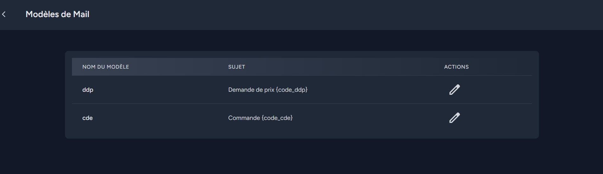
- Zone fichier : Cliquer ou glisser votre fichier CSV avec les matières à importer.
- Bouton prévisualiser : Prévisualiser les données à importer.
- Télécharger un fichier exemple : Permet de télécharger un fichier CSV avec les bonnes entêtes de colonnes et le bon format de fichier.
- Sélection du fournisseur : Permet de sélectionner un fournisseur pour y associer toutes les matières et les prix si il y en a.
Nouvelle matière
Cette fenêtre contextuelle permet d’ajouter des matières depuis la page Matières ou depuis les Commandes et Demande de prix.
- Référence externe/fournisseur : Permet de définir la
référence de la matière chez un fournisseur. - Référence interne : La référence générée
automatiquement par l’application. - Désignation : La désignation de la matière.
- Famille & Sous Famille : Permet d'attribuer une
famille puis une sous famille à la matière pour mieux
les organiser. - Standard : Permet de choisir un standard en
commençant par son dossier puis le standard puis la
révision de celui-ci. - Valeur de référence unitaire : Permet de définir s' il y
a ou non une valeur de référence unitaire sur cette
matière.
- Unité : Sélectionnez l’unité dans laquelle sera traité la matière.
- Quantité : La quantité qu’il y aura déja en stock au moment de la création de la matière.
- Diamètre nominal : Permet de définir le diamètre nominal de la matière (champ optionnel).
- Épaisseur : Permet de définir l’épaisseur de la matière (champ optionnel).
- Stock minimum : Permet de définir un seuil minimum où les utilisateurs pourront être alertés via une Notification.
Modifier la matière
La page” modifier” la matière existe dans deux cas :
Matière verrouillée & Matière modifiable.
Matière modifiable
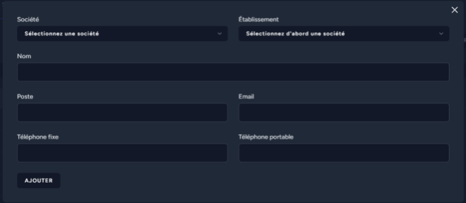
Tous les champs sont identiques à Nouvelle matière et peuvent être modifiés comme on le souhaite.
Matière verrouillée
La matière est verrouillée lorsqu’elle est utilisée dans une Commandes ou une Demande de prix et si elle possède des Mouvements de stock.
Dans ce cas, seuls la famille, la sous-famille, le standard et la valeur de la valeur de référence unitaire restent modifiables mais on ne peut pas changer le type de stockage.
Détails de la matière
- Bouton modifier : Permet d'accéder à la page pour modifier la matière.
- Information principale de la matière : On y retrouve toutes les caractéristiques de la matière :
- La sous famille.
- Le matériau dans lequel est cette matière.
- La quantité en stock actuel et si cette matière possède une valeur de référence unitaire,
en survolant cette valeur, on peut apercevoir le contenu exact des stocks.
- La valeur de référence unitaire.
- Le diamètre nominal.
- L’épaisseur.
- Le standard associé. - Les fournisseurs : On peut retrouver tous les fournisseurs de la matière ainsi que la référence correspondante et leurs prix. En cliquant sur les lignes, on peut s'il y a un prix accéder à l'historique des prix de la matière pour ce fournisseur.
- Gestion des stock : Voir stock pour gérer les stock de la matière.
- Graph stock : Permet de voir l’évolution des stocks sur une période donnée selon les mouvements de stock.
Historique prix matière fournisseur
Cette page permet de retrouver tous les prix d’un fournisseur.
- Sélecteurs de date : Permet de définir une période pour modifier les données affichées par le graphique.
- Graph de prix : Graphique affichant les prix du fournisseur selon les dates sélectionnées.
- Tableaux de prix : Affiche tous les prix de la matière pour ce fournisseur.
Unités
La matière peut être stockée sous différentes unités comme (m,kg,m²….).
Ces unités servent à définir l’unité des stock ainsi que pour toutes autres utilisations de la matière comme dans les commandes ou les demandes de prix.
Standards
Les standards sont des fiches techniques liées à la matière, on peut les retrouver dans la page Matières.
Elles sont stockées sous cette forme :
Dossiers Standards
└──Standards
└──Révisions |
Stocks
Les stocks sont affichés dans la liste de matières et dans le détail de chaque matière.
Le stock existe sous deux formes :
le stock simple (par quantité globale)
La matière est stockée uniquement en quantité totale, sans distinction spécifique.
Le stock avec valeur unitaire (ou par unité de conditionnement)
La matière est stockée sous forme d'unité de conditionnement, c’est-à-dire qu'on enregistre non seulement la quantité totale, mais également la répartition précise par lot ou par emballage.
Exemple :
On dispose de 800 vis, réparties comme suit : - 2 boîtes de 150 vis
- 1 boîte de 400 vis
| On dispose de 18 mètres de tuyaux, répartis comme suit : - 2 sections de 3 mètres
- 1 section de 6 mètres
- 4 sections de 1,5 mètres
|
Ajouter matière dans le stock
L’ajout dans le stock peut être effectué de deux manières: via l’étape d’enregistrement dans le stock de la commande ou manuellement.
Pour procéder manuellement, allez dans les détails de la matière où vous souhaitez ajouter du stock puis dans la partie “Ajouter matière”.
Stock simple | Stock avec valeur unitaire |
Spécifier la quantité que vous souhaitez insérer selon l’unité avec un motif puis cliquer sur “Ajouter” pour ajouter au stock de cette matière. |
Spécifiez la quantité de lot que vous souhaitez insérer et la taille du lot selon l’unité avec un motif puis cliquer sur “Ajouter” pour ajouter au stock de cette matière.
|
Retirer matière dans le stock
“Retirer matière” dans le stock peut être effectué d’une seule manière. Pour procéder, allez dans les détails de la matière où vous souhaitez retirer de la matière du stock puis dans la partie “Retirer matière”.
Stock simple |
Spécifier la quantité que vous souhaitez retirer selon l’unité avec un motif puis cliquer sur “Retirer” pour retirer au stock de cette matière. |
Stock avec valeur unitaire |
Mode standard | Mode ajustement |
Spécifiez la quantité de lot que vous souhaitez retirer et sélectionnez le lot selon l’unité avec un motif puis cliquez sur “Retirer” pour retirer au stock de cette matière. | 
Le mode ajustement permet de modifier complètement une entrée de stock existante.
Sélectionnez l’entrée de stock que vous souhaitez modifier.
Modifiez la quantité pour refléter la nouvelle quantité souhaitée.
Si nécessaire, modifiez également la valeur unitaire.
Attention :
L’ajustement ne fait rien si la quantité reste la même.
Par exemple, remplacer 500 par 500 n'aura aucun effet.
En revanche, si vous remplacez 500 par 400, 100 unités seront retirées de cette entrée de stock, et la quantité totale en stock sera diminuée de 100 unités. |
Mouvements de stock
Les mouvements de stock sont l’historique de tous les changements qu’il y a eu sur le stock d’une matière.
Aperçu des mouvements de stock depuis le détail de la matière.
Le bouton “Voir tous les mouvements” apparaît lorsque la matière possède au moins 5 mouvements de stock et permet d’afficher la page suivante : 
- Récapitulatif : Dans ce récapitulatif, on peut retrouver des informations sur la matière comme la Sous Famille et le stock actuel.
- Filtres : Filtre par période jour semaine ou interval spécifique ou par utilisateur ayant effectué l’action ou par type de mouvement de stock.
- Bouton lien : Si le mouvement de stock est lié à quelque chose comme une commande, il est possible de cliquer dessus pour être redirigé vers la commande.
- Affichage du mouvement : En grand, il est affiché, la quantité de total qui a changé. La couleur varie selon si c’est un ajout ou un retrait. Et si la matière est stockée avec des valeurs de références unitaire, alors en gris et en petit sur la droite, est écrit le détail exact du changement.
Demande de prix
La demande de prix permet de faire une demande de prix pour certaines matières chez différents fournisseurs.
Les demandes de prix ont plusieurs statuts.
Dans cette page, vous pouvez retrouver la liste complète des demandes de prix ainsi qu’un espace de recherche pour appliquer des filtres.
Créer une demande de prix 
Pour créer une demande de prix, il faut soit passer par le tableau de bord ou par la page DDP/CDE ou appuyer sur le bouton “Créer une demande de prix” dans la page “Demande de prix”.
- Zone de recherche : Cet espace permet de rechercher des matières comme dans Matières. Il y a aussi un bouton “Nouvelle matière” qui permet de créer une matière sans quitter l’interface de demande de prix.
- Choix de l'entité : Permet de choisir l'entité pour laquelle vous souhaitez passer la demande de prix.
- Nom : Permet de donner un nom à la DDP si ce champ n’est pas rempli, un nom sera attribué automatiquement.
- Bouton supprimer : Permet de supprimer définitivement la demande de prix, sans retour en arrière possible.
- Zone lignes de demande de prix : Tableau contenant chaque ligne de la demande de prix.
- Code : Code unique par année permettant d’identifier la demande de prix, seuls les numéros sont éditables et la mention AV ou AMB s'ajoute selon l’entité choisie.
- Bouton ajouter ligne vide : Ajoute une ligne vide éditable à 100% qui s’applique à la totalité des fournisseurs sélectionnés et qui n’est pas lié aux matières.
- Statut d’enregistrement : Permet de voir le Statut d’enregistrement.
Lors de la recherche, les matières s’affichent dans le tableau sur la gauche et il suffit de cliquer sur chacune pour les ajouter dans la demande de prix (le tableau sur la droite).
- Référence : La référence interne de la matière.
- quantité : La quantité demandée selon l’unité de la matière.
- Sélection de fournisseur : Sélectionner les fournisseurs à qui vous souhaitez demander le prix de la matière.
- bouton supprimer : Permet de supprimer la ligne de la demande de prix.
Sélection des fournisseurs
Pour sélectionner un fournisseur, appuyer sur le bouton “Sélection de fournisseur”. Puis cette fenêtre contextuelle apparaîtra. Vous pouvez sélectionner des fournisseurs différents pour chaque matière mais l’objectif est d’en avoir en commun.
- Tableau des fournisseurs : liste tous les fournisseurs de la ligne de la demande de prix cliquer sur un pour le sélectionner (il deviendra vert) et s’ajouteront à la liste des fournisseurs de cette matière à la fin de cette demande de prix.
- Tableau de recherche : Permet d’ajouter des fournisseurs qui ne sont pas liés à cette matière jusqu’à présent.
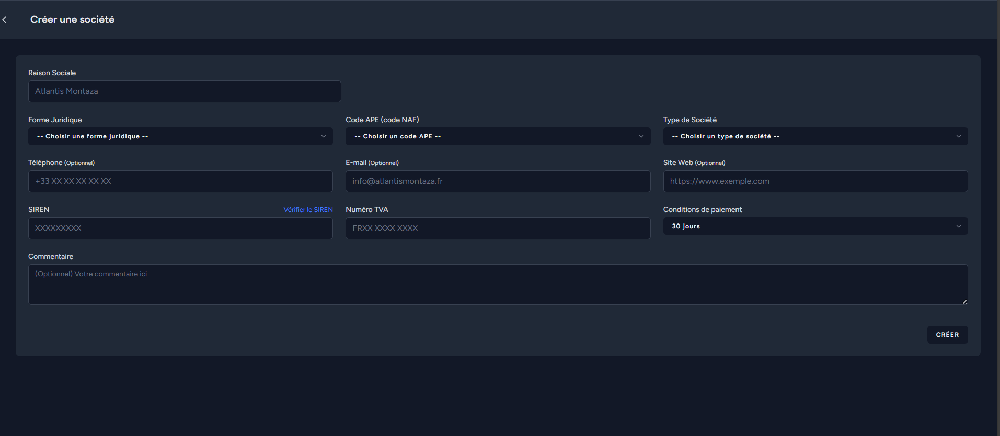
Une fois les fournisseurs sélectionnés, la demande de prix devrait ressembler à cela:
Bordure verte sur toutes les lignes et les champs.
Le code n’est pas pris en compte car il est défini par défaut.
Récapitulatif et validation Demande de prix 
- “Dossier suivi par” : Permet de sélectionner un utilisateur de l’application pour afficher sur la demande de prix la personne qui s’occupe de ce dossier.
- Logo : Logo de l’entité pour laquelle la demande de prix est effectuée.
- Afficher le mail du destinataire : Afficher ou non le mail du destinataire sélectionné dans le pdf de la demande de prix.
- Date de rendu : Affiche la date à laquelle nous voudrions la matière dans la phrase au-dessus du tableau dans le pdf :
“Madame, Monsieur, Veuillez nous faire parvenir votre offre de prix concernant les éléments indiqués ci-dessous avant le DATE_DE_RENDU.”
Si aucune date n’est définie la phrase sera juste :
“Madame, Monsieur, Veuillez nous faire parvenir votre offre de prix concernant les éléments indiqués ci-dessous.”. - Liste des fournisseurs : Liste toutes les informations pour chaque fournisseur.
- Tableau de ddp par fournisseur : Tableau récapitulatif de ce qui est demandé chez chaque fournisseur.
- Sélecteur d’établissement : Permet de sélectionner l’établissement de la société pour y choisir un destinataire.
- Sélecteur de destinataire : Permet de sélectionner un destinataire depuis l’établissement précédemment sélectionné pour chaque fournisseur.
PDF et envoie de mail Demande de prix
À cette étape, vous pouvez apercevoir tous les pdf de la demande de prix ainsi que l'envoi de mail automatique aux destinataires si nécessaire.
- Télécharger tous les pdf : Permet de télécharger tous les pdf dans un fichier au format ZIP.
- Récapitulatif des pdf : Affiche tous les pdf générés, vous pouvez cliquer dessus pour avoir un aperçu en grand sans les télécharger.
- Bouton “Passer cette étape” : Permet de ne pas envoyer de mail et passer à l’étape suivante.
- Sujet de mail : Sujet de tous les mails qui vont être envoyés pré-remplis depuis Modèle de mail.
- Contenu du mail : Contenu de tous les mails qui vont être envoyés pré-remplis depuis Modèle de mail.
- Bouton “envoyer les mails” : Envoie un mail à chaque destinataire de la demande de prix avec le pdf correspondant.
Retours de demande de prix
Cette étape permet de rentrer les référence fournisseur, les prix et les dates de livraison possibles pour la matière pour chaque société.
- Référence fournisseur : Vous pouvez remplir ou non la référence du fournisseur pour chaque matière et chaque fournisseur.
- Prix unitaire : Le prix unitaire de la matière chez le fournisseur. La case devient verte lorsque le prix est le moins cher de tous les fournisseurs.
- Total : Prix total de toutes les matières pour le fournisseur. La case devient verte lorsque le prix est le moins cher de tous les fournisseurs.
- Ligne inaccessible : La ligne devient inaccessible car le prix de cette matière n’a pas été demandé chez ce fournisseur.
- Champ commentaire : Permet de laisser un commentaire sur la demande de prix.
Demande de prix terminé
Dans cette page, vous retrouvez un récapitulatif de la demande de prix ainsi que la possibilité de passer commande chez un des fournisseurs.
- Quantité demandée : La quantité demandée au moment de la demande de prix.
- Montant total : Le montant total de la ligne chez le fournisseur. Le texte devient vert lorsque le prix est le moins cher de tous les fournisseurs.
- Bouton “commander” : Permet de commander toutes les matières chez le fournisseur dans une nouvelle Commande.
- Ligne inaccessible : La ligne devient inaccessible car le prix de cette matière n’a pas été demandé chez ce fournisseur.
Commandes
La commande permet de passer une commande pour certaines matières chez un fournisseur.
Les commandes ont plusieurs statuts.
Dans cette page vous pouvez retrouver la liste complète des commandes ainsi qu’un espace de recherche pour appliquer des filtres.
Créer une Commande
Pour créer une commande, il faut soit passer par le tableau de bord ou par la page DDP/CDE ou appuyer sur le bouton “commande” dans la page commande.
- Zone de recherche : Cet espace permet de rechercher des matières comme dans Matières. Il y a aussi un bouton “Nouvelle matière” qui permet de créer une matière sans quitter l’interface de commande.
- Choix de l'entité : Permet de choisir l'entité pour laquelle vous souhaitez passer la commande.
- Nom : Permet de donner un nom à la CDE si ce champ n’est pas rempli, un nom sera attribué automatiquement.
- Sélection du destinataire: Permet de sélectionner un destinataire à la commande en sélectionnant une société de type fournisseur puis un établissement puis un destinataire.
- Bouton références : Affiche ou non les références des fournisseurs pour la matière.
- Zone lignes de commande : Tableau contenant chaque ligne de la commande.
- Code : Code unique par année permettant d’identifier la commande, seuls les numéros sont éditables et la mention AV ou AMB s'ajoute selon l’entité choisie.
- Bouton ajouter ligne vide : Ajoute une ligne vide éditable à 100% et qui n’est pas liée aux matières.
- Statut d’enregistrement : Permet de voir le Statut d’enregistrement.
Lors de la recherche les matières s’affichent dans le tableau sur la gauche et il suffit de cliquer sur chacune pour les ajouter dans la commande (tableau sur la droite).
- Dernier prix : Affiche le dernier prix pour ce fournisseur.
- Références : La référence interne de la matière et la référence du fournisseur si le bouton “afficher les références fournisseur” est activé.
- Quantité : la quantité demandée selon l’unité de la matière.
- Date de livraison : La date à laquelle la matière devrait être livrée ou récupérée.
- Prix unitaire : Le prix à l'unité de la matière automatiquement rempli s' il y a un prix enregistré entre cette matière et ce fournisseur.
Récapitulatif et validation Commande

- Informations de référence : Champs optionnels pour préciser des informations sur le PDF de commande.
- Logo : Logo de l’entité qui passe la commande.
- Frais : La TVA est obligatoire mais peut être égale à 0 mais les frais de livraison et les frais supplémentaires où l’on peut préciser la nature, sont optionnels. Ces frais sont appliqués au prix hors taxe.
- Récapitulatif : Tableau contenant le contenu de la commande avec les prix calculés ainsi qu’une partie avec la décomposition du calcul du total de la commande.
- Conditions de paiements : Les conditions de paiement sont présélectionnées selon le fournisseur et si elles changent à la commande elles seront présélectionnées pour les futures commandes.
- Type de livraison : Soit en retrait ou soit en livraison. Dans ce cas, il faut justifier des horaires d’ouverture et de l’adresse qui sont définis au niveau des Informations entreprise mais qui peuvent être modifiées uniquement pour cette commande.
- Notes de commande : Sélectionnez une ou plusieurs Notes de commande afin de les afficher dans le PDF de la commande.
Vous pouvez les éditer en appuyant sur et vous pouvez écrire une note personnalisée pour seulement cette commande. Vous pouvez l’enregistrer en tant que note de commande pour les futures commandes en appuyant sur “Enregistrer cette note personnalisée pour les prochaines commandes”.
PDF et envoie de mail commande
À cette étape, vous pouvez apercevoir tous les PDF de la commande ainsi que l'envoi de mail automatique au destinataire si nécessaire.
- Télécharger le PDF : Permet de télécharger le PDF de la commande.
- Télécharger le PDF : Permet de télécharger le PDF de la commande sans les prix.
- Récapitulatif des PDF : Affiche le PDF généré, vous pouvez cliquer dessus pour avoir un aperçu en grand sans le télécharger.
- Bouton “Passer cette étape” : Permet de ne pas envoyer de mail et passer à l’étape suivante.
- Sujet de mail : Sujet de tous les mails qui vont être envoyés pré-remplis depuis Modèle de mail.
- Contenu du mail : Contenu de tous les mails qui vont être envoyés pré-remplis depuis Modèle de mail.
- Bouton “envoyer les mails” : Envoie un mail au destinataire de la commande avec le pdf correspondant.
Retours & livraison de commande
Cette étape permet de rentrer les retours et l’état de livraison de chaque ligne de la commande.
- Tableau de retour : Le tableau où l’on rentre les informations au moment de la livraison
- Statut : si la ligne de commande à été annulée entre temps ou pas (en cours ou annulé).
- Quantité : la quantité commandée. (peut être modifié).
- Prix Unitaire hors taxe : le prix à l'unité de la matière. (peut être modifié).
- Type d'expédition : si la ligne à été livrée ou si elle a été récupérée.
- Date de livraison réelle : Date à laquelle la matière à été reçue ou récupérée. (tant que la
date reste vide, la matière ne sera pas comptée comme livrée ou récupérée).
- Changement livraison : Tous les changements effectués dans le tableau ci-dessus sont affichés dans cette liste.
- Accusé de réception : Possibilité de télécharger un accusé de réception.
- Champ commentaire : Permet de laisser un commentaire sur la commande.
Commande terminé
Dans cette page, vous retrouvez un récapitulatif de la commande.
Cette étape intervient avant la finalisation de la commande, c'est-à-dire qu’il est toujours possible de retourner en arrière mais la commande est terminée.
ATTENTION : si vous passez à l’étape suivante, il sera impossible de retourner en arrière.
Commande vérifiée et enregistrement en stock
ATTENTION : Vous ne pouvez plus retourner en arrière.
Lors de votre arrivée sur la page, si au moins une matière à été livrée,le volet d’enregistrement en stock devrait s’ouvrir :
Vous pouvez décider si vous souhaitez enregistrer en stock les matières ou non.
ATTENTION : Vous ne pouvez plus retourner en arrière après avoir enregistré les changements.
Il est possible de fermer le volet sans faire d’action afin de le faire ultérieurement, il se ré-ouvrira à chaque visite de la commande sauf si vous décidez de “Ne pas enregistrer”.
Chaque ligne peut être déroulée afin de voir dans le détail ce qui sera enregistré dans le stock.
- Quantité commandée : La quantité spécifiée dans la ligne de commande.
- valeur unitaire : Valeur de référence unitaire de la matière commandée.
- Quantités à ajouter au stock : Ce tableau récapitule ce qui va être ajouté au stock de la matière. Il décompose la quantité commandée et essaye de l'aligner sur la valeur de référence unitaire.
Chaque ligne peut être éditée et supprimée. - Bouton “Ajouter une ligne” : Permet d’ajouter un ligne pour ajuster la quantité et la valeur unitaire comme souhaité pour se rapprocher de ce qui a vraiment été livré.
Si la matière n’a pas de référence unitaire, seule une quantité sera demandée. Une fois enregistré, les changements sont toujours visibles depuis le volet :
Affaires
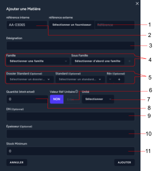
- Tableau des affaires : Liste toutes les affaires en fonction de la recherche, les affiches toutes si aucune recherche.
- Barre de recherche : Permet de rechercher des affaires spécifiques. La recherche peut se faire via le nom ou le code.
- Quantité : Permet de choisir combien d'affaires afficher par page.
- Nouvelle affaire : Permet de créer une nouvelle affaire.
Nouvelle affaire
Dans la création d'une nouvelle affaire le code s’adapte automatiquement, le premier nombre représente l’année et le second le numéro de l’affaire.
Exemple : 25-004 , la quatrième affaire de 2025.
Le budget ainsi que le nom de l’affaire sont à adapter en fonction de l’affaire.
Consulter une affaire
Pour consulter une affaire vous devez cliquer sur le bouton “voir” de l’affaire visée dans la section “action” du tableau d’affichage des affaires.
- Nombre de commande : Permet de voir le nombre de commande associée à l’affaire
- Commandes associées : Permet de voir les commandes associées à l’affaire ainsi que tout leur informations
- Coût : Permet de mettre en relation le coût total des commandes avec le budget destiné à cette affaire.
- Modifier : Permet de modifier l’affaire.
Editer une affaire
Pour éditer une affaire, il faut cliquer sur le crayon dans la section action du tableau d’affichage. Il est aussi possible d’en modifier une en la consultant et en cliquant sur modifier en haut à droite.
La modification d’une affaire fonctionne de la même manière que l’ajout, il les sections sont à remplir de la même manière.
Fonctionnalités communes
Statut d’enregistrement
Le statut d’enregistrement signifie que la page actuelle s’enregistre automatiquement à chaque modification :
il existe sous 3 formes :

Enregistré ⟳ : Toutes les modifications de la page sont enregistrées.
sauf si des champs où des lignes ont une barre verte à leurs droite comme suivant :
Dans ce cas, tous les champs ayant une barre verte sont enregistrés mais ceux qui n’en possèdent pas ne le sont pas.
Enregistrement en cours … ◯ : Les modifications de la page sont en cours d'enregistrement.
ⓘATTENTION : Veuillez ne pas fermer la page durant cette étape.
Non-enregistré ⟳ : La page n’est pas enregistrée, vous pouvez cliquer sur pour relancer une tentative de sauvegarde.
Si le statut Non-enregistré persiste, veuillez vérifier les champs, il doit y avoir une erreur.
Statuts
Les statuts sont les différentes étapes par lesquelles passent les commandes et les demandes de prix et autres.
- Procédure commencée mais non validée.
-Procédure démarrée mais en attente de réponses.
-Procédure terminée.
-Procédure terminée et contrôlée (valable seulement pour les CDE).
Autres Pages
Page d’accueil
Cette page est la page d’origine de l’application, elle n’a pas de réelle utilité mis à part accueillir les utilisateurs connectés et déconnectés.
Page DDP/CDE
DDP/CDE correspond à Demande de prix & commandes. Cette page permet de retrouver toutes les demandes de prix, commandes en attente et en cours.
Cette page ressemble au tableau de bord mais avec plus d’informations.
Tableau de bord
Cette page ressemble à la page DDP/CDE mais les informations sont réduites.
Pour y accéder, vous pouvez cliquer sur Tableau de bord dans la Barre de navigation.
Vous pouvez y retrouver les demandes de prix et les commandes afin de pouvoir y accéder rapidement.
Administration
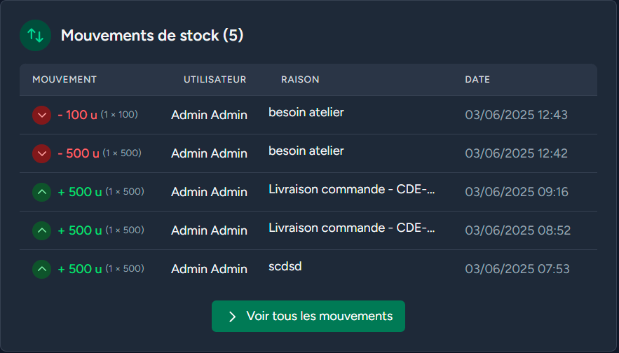
L'administration est l'endroit où les utilisateurs, en fonction de leurs droits, peuvent interagir avec certaines données fixes de l'application. L'accès à ces différentes sections varie selon les droits associés au poste de l'utilisateur.
Administration 43
Utilisateurs 44
Créer un utilisateur 44
Modifier un utilisateur 45
Informations entreprise 46
Entitées 46
Historique 48
Modèle de mail 49
Notes de commande 50
Modifier la note de commande 50
Permissions & Postes 51
Permissions 51
Postes 52
Utilisateurs
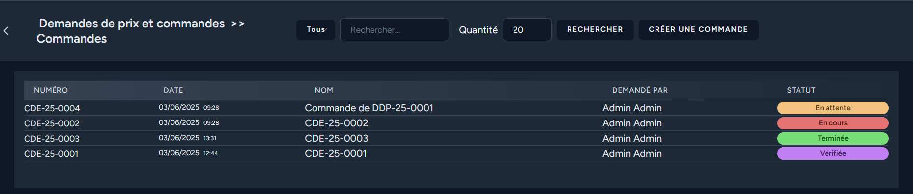
Cette page affiche la liste de tous les utilisateurs actifs de l’application et permet aux administrateurs de gérer leurs informations.
- Bouton afficher les comptes supprimé/désactivé : Permet d’afficher seulement les comptes qui ont été désactivé et de pouvoir les réactiver.
ATTENTION : Vous ne pouvez plus vous connecter aux comptes désactivé, il est nécessaire d’avoir un compte avec la permission gérer les utilisateurs pour le réactiver.
- Bouton réactiver : Il permet de rendre actif un utilisateur désactivé.
- Bouton Créer un utilisateur : Permet de Créer un utilisateur.
- Bouton modifier un utilisateur : Permet de modifier un utilisateur.
Créer un utilisateur
Pour créer un utilisateur, il faut qu’ un utilisateur ait la permission : gérer les utilisateurs pour pouvoir créer un compte.
Dans la page utilisateur appuyer sur le bouton Créer un utilisateur.
Vous devez remplir le
nom, prénom, E-mail,
numéro de téléphone précédé du code pays si possible.
Vous devez aussi sélectionner un poste pour l'utilisateur.
Modifier un utilisateur
Vous pouvez modifier un utilisateur en cliquant sur le bouton modifier un utilisateur ou en modifiant son profil.
En tant qu’administrateur des utilisateurs vous pouvez :
- Changer ses informations personnelles.
- Changer le mot de passe de l’utilisateur (seulement si vous connaissez son mot de passe actuel)
Si l’utilisateur a perdu son mot de passe , il doit passer par la procédure “mot de passe oublié”.
- Changer le poste de l’utilisateur.
- Désactiver le compte utilisateur.
ATTENTION : Vous ne pouvez plus vous connecter aux comptes désactivés, il est nécessaire d’avoir un compte avec la permission “gérer les utilisateurs” pour le réactiver.
Un compte utilisateur ne peut pas être supprimé, il peut seulement être désactivé.
Informations entreprise
- Sélection de l’entité : Permet de choisir l’entité à modifier.
- Nom : Nom officiel de l’entreprise ou de l’entité sélectionnée.
- Adresse : Adresse postale complète (numéro et nom de rue) du siège social ou de l’établissement.
- Ville : Ville où se situe l’entreprise ou l’établissement.
- Code postal : Code postal correspondant à l’adresse renseignée.
- Horaires : Plage horaire d’ouverture ou de fonctionnement de l’entreprise (ex. : 9h – 17h).
- Téléphone : Numéro de téléphone principal de l’entreprise (ligne fixe ou mobile professionnelle).
- SIRET : Numéro d’identification unique de l’établissement (14 chiffres), délivré par l’INSEE.
- RCS : Numéro d’immatriculation au Registre du Commerce et des Sociétés (ex. : RCS Nantes B 123 456 789).
- Numéro TVA : Numéro d’identification fiscale pour la TVA intracommunautaire
(ex. : FR 12345678901). - Code APE : Code d’Activité Principale Exercée (ex. : 6201Z pour le développement informatique), délivré par l’INSEE.
- Logo : Permet d’ajouter ou de modifier le logo officiel de l’entreprise, affiché dans l’application et les documents.
Tous ces champs sont obligatoires et apparaîtront dans les différentes parties de l’application et des documents générés.
Entités
Une entité représente une société distincte pour laquelle vous pouvez passer des commandes ou faire des demandes de prix dans l’application. Chaque entité correspond à une des trois sociétés pour lesquelles l’application est utilisée.
Historique 
La page historique permet aux utilisateurs qui y ont accès avec la permission “voir historique” de voir tous les changements importants qui ont affecté la base de données.
Vous pouvez rechercher des mots clés, définir un intervalle de temps et combien de résultats seront affichés par page.
Le tableau est divisé en 4 colonnes :
- Utilisateur : L’utilisateur qui a effectué cette modification.
- Type de modèle : La table/secteur dans laquel/lequel les données ont changé.
- Changement : Chaque ligne correspond à une colonne qui a été modifié suivi des données
- Les données de chaque ligne sont séparées par une flèche “→”, celles avant la flèche sont avant et celles après la flèche sont après le changement (ex: nom : DUPON → DUPONT) .
- Type de changement : cette colonne contient si c’est une modification, une création ou une suppression suivi de la date (ex: Créée le 16/04/2025).
Modèle de mail
Cette page permet aux utilisateurs qui ont le droit de faire des demandes de prix et des commandes de modifier les modèles de mail automatique.
En appuyant sur le crayon au bout de la ligne, l’utilisateur peut modifier le modèle de mail correspondant.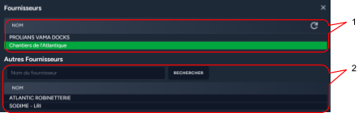
- Sujet du mail : Le sujet du modèle du mail et il peut contenir {code_ddp} qui sera remplacé automatiquement par le code de la demande de prix ou {code_cde} pour les CDE.
- Champ contenu : Le contenu du modèle de mail , il correspond au corps du mail et il ne peut pas contenir {code_ddp} ou {code_cde} pour les CDE.
- Barre de mise en forme : Cette barre d’action permet de faire de la mise en forme dans le contenu du mail :
- Mettre en gras.
- Souligner.
- Liste numérotée.
- Liste à puces.
- Bouton supprimer le style : permet de supprimer le style activé par les autres boutons.
Notes de commande
Cette page permet d’administrer les notes de commande des Commandes, vous pouvez en ajouter,
les modifier, les réordonner et les supprimer pour chaque entité.
- Sélecteur d’entité : Permet d’afficher les notes liées à l'entité sélectionnée.
- Liste des notes de commande : La liste des notes de commande pour l’entité sélectionnée.
- Bouton réordonner : En glissant déposer, vous pouvez changer l’ordre des notes de commande.
- Bouton modifier la note : Permet d’éditer la note de commande.
Modifier la note de commande
- Bouton supprimer : Permet de supprimer la note.
ATTENTION : si vous supprimez une note de commande, les commandes qui l’utilisent perdront cette ligne.
- Champ contenu : Le contenu textuel de la note.
- Sélection entité : Permet de choisir l’entité à laquelle la note sera liée.
- Bouton pré cocher la note de commande : Permet de cocher automatiquement la note de commande lorsque l’on passe commande.
Permissions & Postes
Un poste représente un rôle ou une fonction dans l’entreprise (ex : Soudeur, Gérant, Magasinier…).
Chaque poste a des permissions précises qui définissent ce qu’un utilisateur peut faire ou non dans le logiciel.
Pour modifier les permissions des postes des utilisateurs accéder à la page Administration puis appuyer sur le bouton “Permissions et postes”.
Permissions

- Barre de navigation : Permet de naviguer entre l’administration des postes et des permissions.
- Sélecteur de postes : Permet de sélectionner le poste pour lequel on modifie les permissions.
Pour modifier les permissions de chaque poste, vous devez cocher et décocher les cases qui correspondent et appuyer sur “Mettre à jour les permissions”.
Postes
Choix du poste : Sélectionner le poste que vous souhaitez éditer.
Raison sociale : Sélectionner l’entité à laquelle le poste appartient.
Champ nom : Éditer le nom du poste.
Bouton désactiver : Désactiver le poste .
ATTENTION : Si vous désactivez un poste avec des utilisateurs, ils ne seront plus capables de se connecter à l’application.

Ce deuxième volet permet de voir quels utilisateurs sont affectés à ce poste.
Il permet aussi de les déplacer en sélectionnant le poste et en cliquant sur le bouton “▶”.
En appuyant sur le bouton “Créer un poste” , une fenêtre s’ouvre à votre disposition.
Pour créer un un poste, il faut :
- Sélectionner l’entité correspondante.
- Renseigner le nom du poste.
Et appuyer sur le bouton “créer”.
Si vous souhaitez renseigner modifier les permissions de ce poste il faut le faire depuis le menu de modification de Permissions.
Affaire
Personnalisation
Apparence
L’application possède deux thèmes
Le thème clair :
Et le thème sombre :
Les thèmes sont définis selon les paramètres d’apparence de votre navigateur.